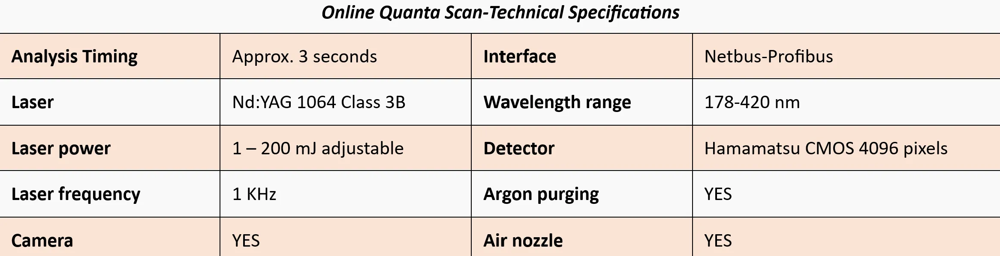

Online Quanta Scan is a high-technology, real-time multi-elemental analyzer designed for rapid diagnosis of rigid materials and pressed samples on a conveyor belt with variable measurement speed and spatial resolution.
Its automated, integrated accessories and software can be configured according to anticipated measurement requirements.
Analytical measurements are performed using LIBS spectra with optimized noise reduction to ensure reliable results.
Online Quanta Scan :
Online Quanta Scan is a high-technology, real-time multi-elemental analyzer designed for rapid diagnosis of rigid materials and mineral samples on a conveyor belt with variable measurement speed and spatial resolution. Its automated, integrated accessories and software can be configured according to anticipated measurement requirements. Analytical measurements are performed using LIBS spectra with optimized noise reduction to ensure reliable results. This technique can be implemented as an automated sorting and monitoring system in production lines across a wide range of industries, including metallurgy, mining and food processing. It enables characterization of raw materials and finished products as well as tracking the production processes without the need for sample preparation or time-consuming laboratory procedures. In addition, real-time projection of material surface is achieved through scanning with micrometer-scale by Quanta Scan. This LIBS scanner maps the spatial distribution of elemental composition across different points on the sample.
Promising seamless integrity of analytical instrumentation in QA/QC units is fulfilled by Specto Shimatsu. The state-of-the-art equipment reinforce the construction efficiency by increased production rate with balanced costs and reduced CO2 emission. Furthermore, online characterization by Quanta Scan enhances the efficacy and speed of End-of-Life material recycling which aids the sustainable development.
Priority in analysis
• High speed analysis which is adjustable with the clients’ requirements
• Multi elemental analysis by just one laser emission
• Elimination of spectral noise through dust removal from the samples by air jet
• 3D mapping of material composition with high speed and high resolution
Core benefits
Facilitates online decision-making with minimal or no sample preparation
Upgrading throughputs and productivity in different industrial sectors
Supporting the manufacturing sustainability through lower energy consumption
Applications
➤ Cement industry : Traditionally, clinker quality control relies on manual sampling followed by laboratory analysis using techniques such as XRF, XRD, and wet chemical methods. While these approaches are well established, the time required for sampling, sample preparation, and laboratory testing often results in delayed feedback, limiting the ability to promptly adjust kiln operation and process conditions. Quanta Scan online LIBS scanning system overcomes these limitations by providing continuous, in-situ analysis of clinker directly on the production line. This real-time measurement enables immediate insight into both chemical and mineralogical properties of clinker, allowing cement producers to respond quickly to process variations and maintain optimal kiln performance.
➤ Smart Ore Sorting and Stockpile Optimization: Real-time knowledge of ore chemistry is essential for efficient grade sorting and effective stockpile management in modern mining operations. Increasing variability in ore quality and declining grades make fast, accurate decision-making more important than ever. QuantaScan online LIBS elemental analyzer delivers continuous, real-time chemical analysis directly on material streams—without sampling, sample preparation, or the use of radiation. This instant data enables operators to optimize ore sorting and stockpile formation, maximizing the value of each ton mined.
Applicable in different industrial fields, Quanta Scan delivers consistent and dependable results with its multi-elemental, adjustable, rapid and low-noise characteristics. The system can be mounted on conveyer belts to control the quality of inputs/outputs of the line with adaptable accuracy. Especially customized for classification and inspection of different materials, online LIBS scan has the turnkey advantages for metal ore and drill core analyses.
{kind=link}